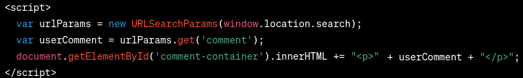
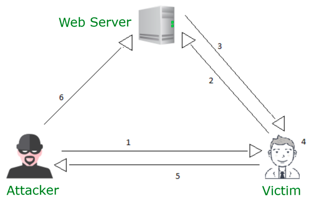

DOM-based XSS
In this module you will be able to see how (and understand why) DOM-based XSS attack work and what are its consequences.
DOM-based XSS is an attack that consists of injecting JavaScript code into the DOM (Document Object Model). Unlike Stored XSS attack, DOM-based XSS does not require the server to store the malicious code. The code is executed on the client side, which makes it harder to detect.
Let's go straight to the example.
Example
Below is an application that is vulnerable to DOM-based XSS.
Part of its code is shown in the figure below.

This script retrieves an element from the link and generates HTML code based on it, generates a DOM object.
This is a place vulnerable to DOM-based XSS attack, because the attacker is able to edit the link element in any way, and the script does not filter it in any way.
Let's look at this application.
Let's add a comment:
<script>alert("XSS")</script>
To help you understand what happened, let's get over the attack step by step:
1. The attacker finds a vulnerable place in the application - an unfiltered link element that is used to generate a DOM object.
2. The attacker creates a link that contains the malicious code - for example, a script that does "something".
3. The attacker sends the link to the victim.
4. The victim clicks on the link.
5. The victim's browser downloads the page and executes the script (which is part of the link) - the "something" that the script does may be for example taking over the victim's session.
6. The attacker has benefited from the attack.

As you can see, the attacker does not need to store the malicious code on the server (as in the case of Stored XSS attack), which makes it even harder to detect.
Threats
Pretty much the same as in the case of Stored XSS attack the attacker can do a lot of harm to the victim:
- Stealing user data and sending them to the attacker (e.g. via e-mail)
- Redirecting the user to the attacker's page
- Taking over the user's session
ETC.
The thing that changed is the way the attack is performed - the attacker may omit the server thus making it harder to detect the attack.
Countermeasures
The countermeasures are pretty much the same as in the case of Stored XSS attack - DO NOT TRUST USER INPUT.
- Input validation
- Output encoding
- Sanitization
- Content Security Policy
However, the most important thing is to remember that the DOM-based XSS attack is performed on the client side, so the countermeasures should be implemented on the client side as well.